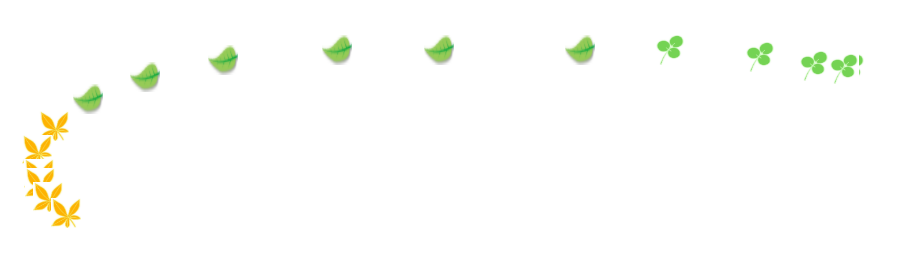

首先放置一连的image
<body>
<div><img src="yezi.png" alt="tu"></div>
<div><img src="yezi.png" alt="tu"></div>
<div><img src="yezi.png" alt="tu"></div>
<div><img src="yezi.png" alt="tu"></div>
<div><img src="yezi.png" alt="tu"></div>
<div><img src="yezi.png" alt="tu"></div>
</body>
然后设置样式，主要是图片的大小
<style>
div {
position: absolute;
height: 20px;
width: 20px;
}
img {
height: 100%;
width: 100%
}
</style>最后就是实现行为
<script>
document.onmousemove = function (eve) {
var e = eve || window.event;
var adiv = document.getElementsByTagName("div");
//先把第一个div的位置拿到
adiv[0].style.top = e.clientY + "px";
adiv[0].style.left = e.clientX + "px";
//遍历剩下的div，让每个div的位置等于前一个div的位置，即可实现跟随行为
for (var i = adiv.length - 1; i > 0; i--) {
adiv[i].style.top = adiv[i - 1].style.top
adiv[i].style.left = adiv[i - 1].style.left
}
}
</script>一个简单的小案例便完成了。效果图如下：

ps:div可以多给点，以防看不出效果